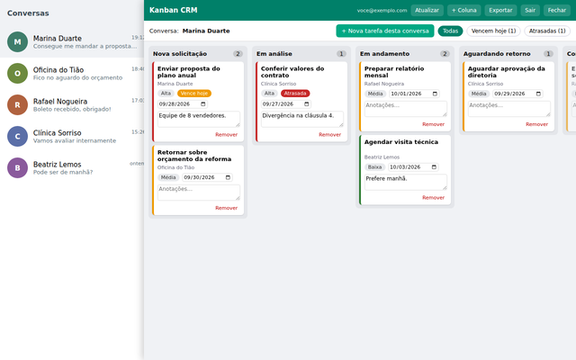

Seus pedidos do WhatsApp Web, organizados em tarefas.
Crie uma tarefa direto da conversa aberta, defina prazo e prioridade e acompanhe cada solicitação até a conclusão em um quadro Kanban.
Prazos · Prioridades · Sincroniza com o Google
Como funciona
1. Crie a tarefa
Com uma conversa aberta, clique em “Nova tarefa desta conversa”. O título é preenchido com o texto selecionado ou com a última mensagem recebida, e você pode editá-lo.
2. Defina prazo e prioridade
Escolha a data, a prioridade (alta, média ou baixa) e escreva anotações no próprio card.
3. Acompanhe no quadro
Arraste os cards entre as colunas: Nova solicitação, Em análise, Em andamento, Aguardando retorno e Concluída.
Recursos
- Vários cards para o mesmo contato.
- Filtros “Vencem hoje” e “Atrasadas”, e contador de tarefas vencidas no ícone da extensão.
- Colunas renomeáveis e possibilidade de criar novas.
- Login com a sua conta Google; suas tarefas acompanham a conta em qualquer computador.
- Exportação dos dados em arquivo JSON.
Privacidade em resumo
Cada usuário acessa somente as próprias tarefas. A extensão não envia mensagens, não automatiza disparos e não copia o histórico das suas conversas. Leia a Política de Privacidade completa.
Suporte
Dúvidas, problemas ou pedidos de exclusão de dados: marcospavan@marcospavan.com.